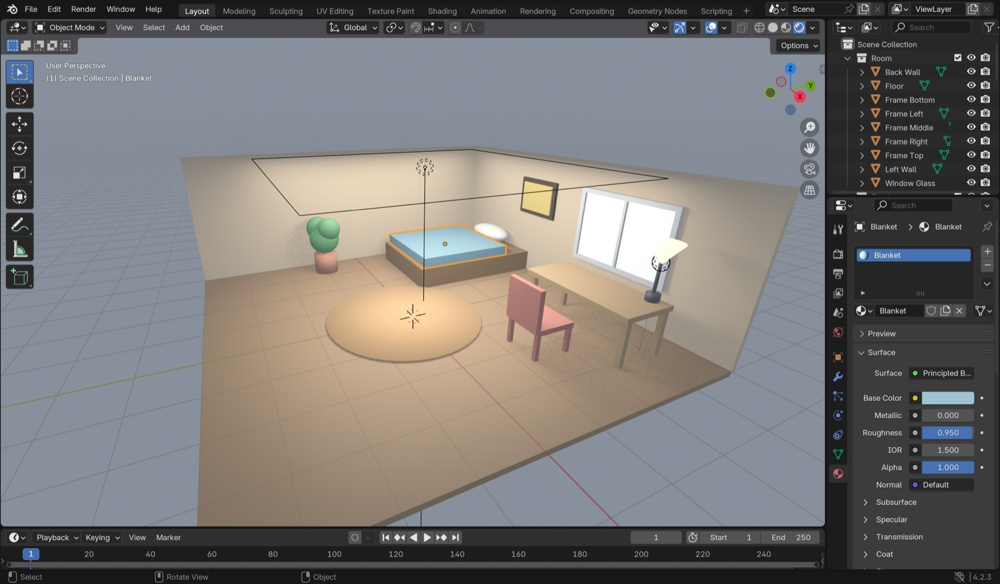
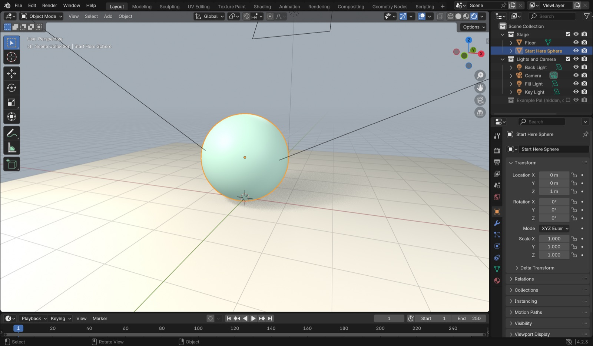
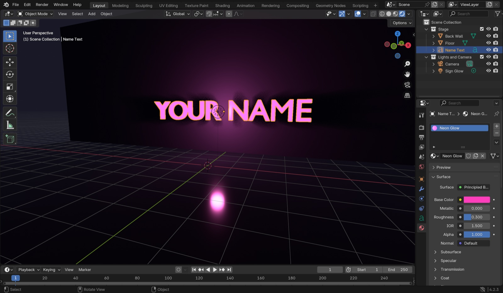
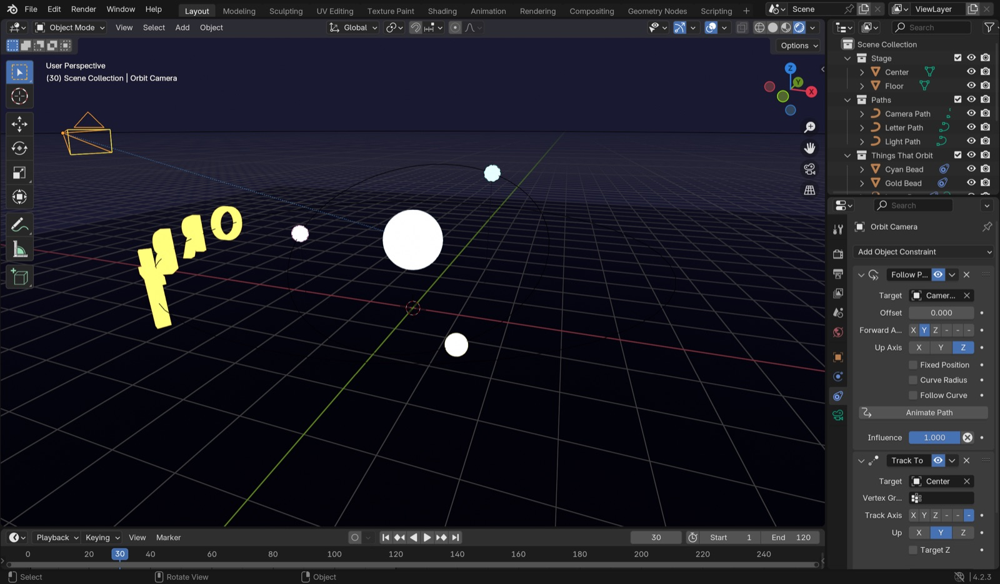
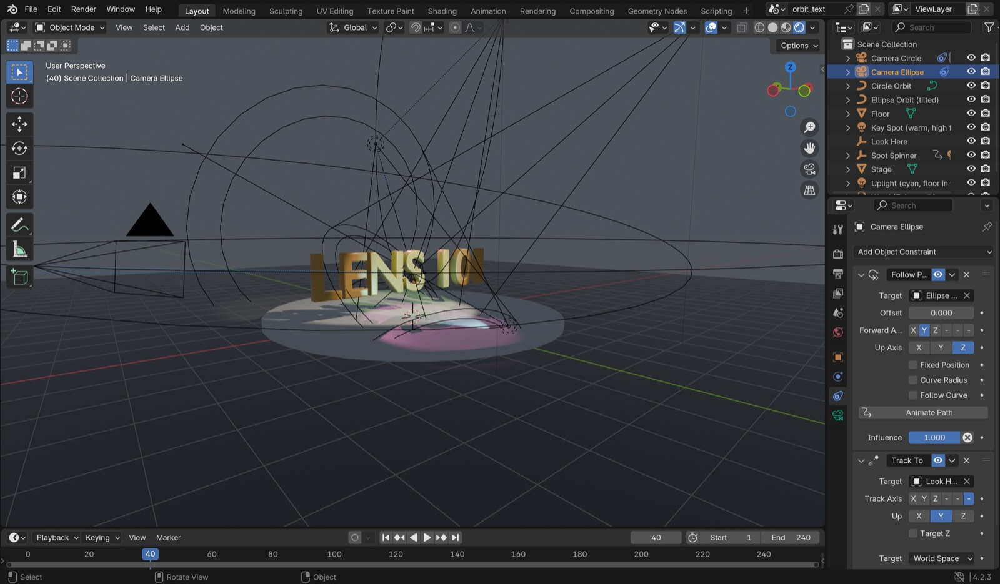
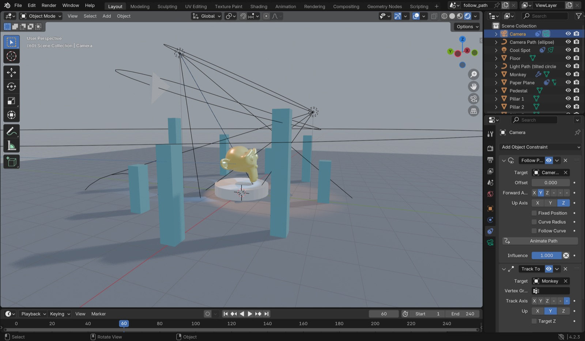
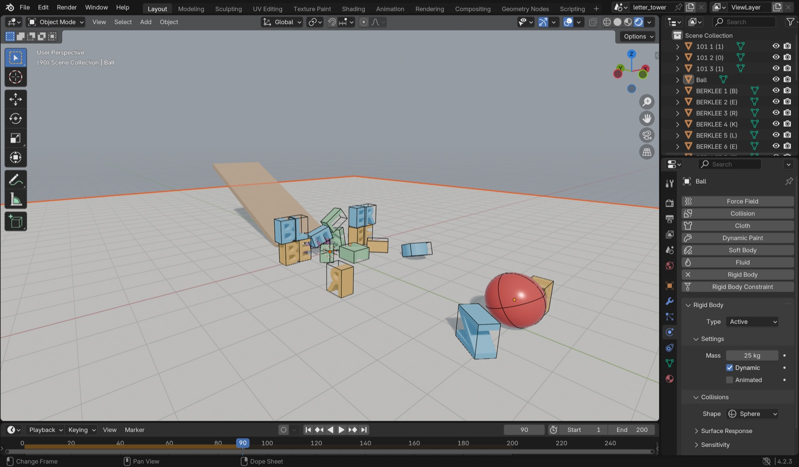
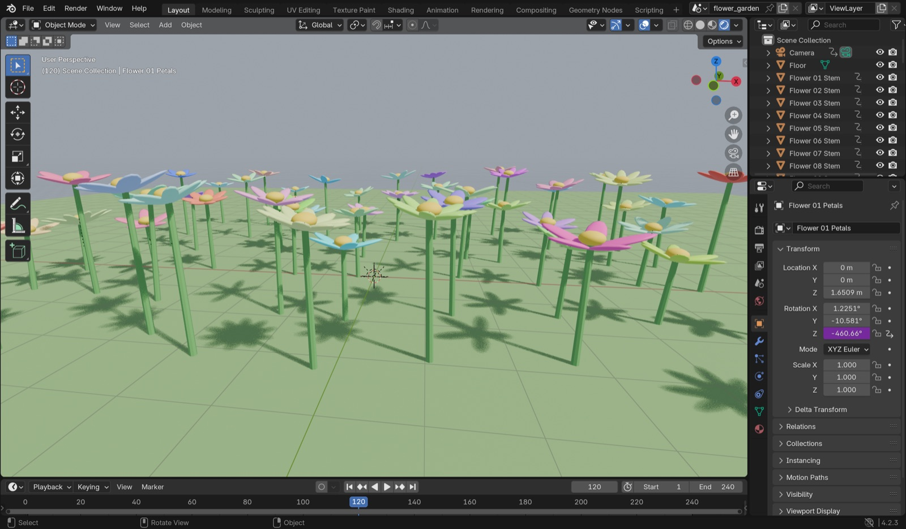
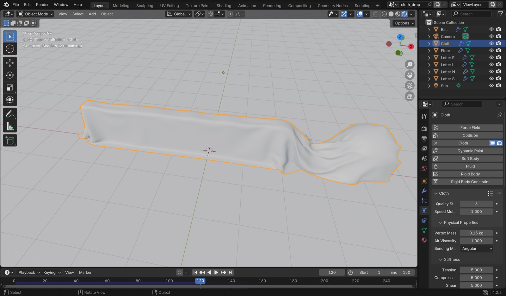
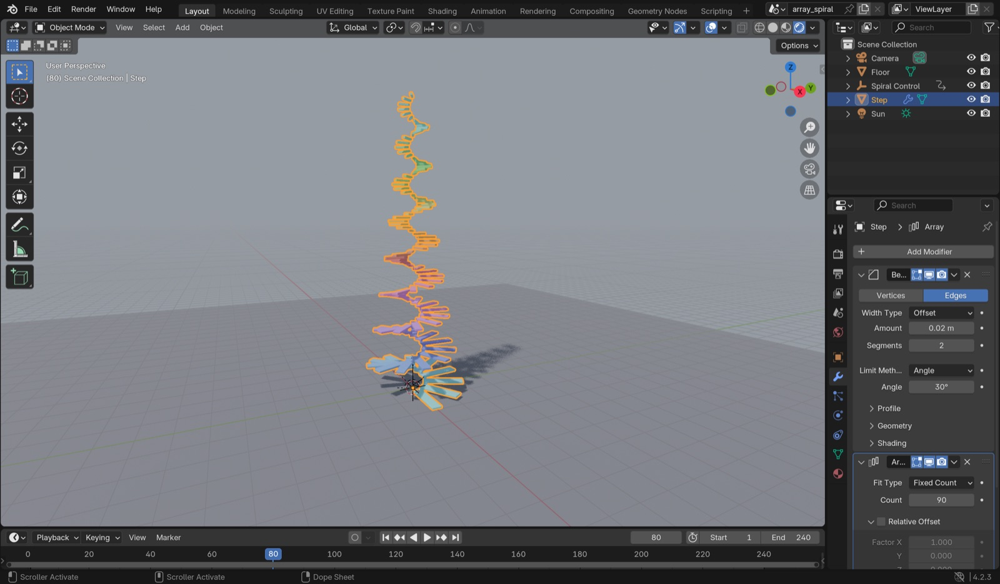

Blender templates.
Each file is a small scene you can open and change. The pictures are screenshots from inside Blender, so you know what you will see when you open it. Pick one to download, then change something in it.
To open a file, download it and double-click it, or use File, Open in Blender. Put your mouse over the 3D view and press Space to play the animation. If Blender asks about running scripts, click Allow. The flower garden needs scripts to move.
- Redecorate the Room
- Primitive Pal
- Glowing Name Sign
- Orbit System
- Orbit Text
- Follow the Path
- Letter Tower
- Flower Garden
- Cloth Drop
- Array Spiral


Redecorate the Room
A small bedroom with a bed, a desk, a chair, a lamp and a window. Everything is a simple shape, so it is easy to move and color.
- Change three colors in the Material tab. Its icon is a red ball.
- Move two pieces of furniture. Press G to grab, then click to drop.
- Change the lamp's light color, then press F12 to render.


Primitive Pal
The file has a lit stage with one sphere. You build a creature out of spheres, cubes and cones.
- Press Shift+A to add a shape. Use G, R and S to move, rotate and scale it.
- Make one thing weird on purpose.
- If you get stuck, click the eye next to the Example Pal collection to see one we made.


Glowing Name Sign
A neon sign on a dark wall that says YOUR NAME. It should say your name.
- Click the text, press Tab, delete the letters, type your name, press Tab again.
- In the Material tab, change Base Color and Emission Color.
- Turn Emission Strength up or down and watch the glow change.


Orbit System
The letters O, R, B, I, T and three colored lights circle a glowing ball. A second camera flies around the outside and keeps looking at the center.
- Select a letter and open the Constraints tab. Follow Path is what makes it travel.
- Change a light's color, or change the Offset to space the letters out.
- Select Orbit Camera and press Ctrl+Numpad 0 to look through it.


Orbit Text
Your word stands in 3D on a stage. Two cameras fly around it: one on a circle, one on a tilted oval. Both always look at the word. Four spotlights light it, and two of them spin.
- Click the word, press Tab, type your own word, press Tab again.
- Press Space. The circle camera films the first half, then the camera marker on the timeline switches to the oval camera.
- Both cameras aim at Look Here, so move it with G and both cameras follow.
- Select a spotlight and change its color or power in the Light tab, which has a green bulb icon.
- Select Ellipse Orbit and press S then X to stretch the oval.


Follow the Path
The camera rides an oval, two colored spotlights ride a tilted circle, and a paper plane loops a figure 8 around the gold monkey.
- Select Camera, open the Constraints tab. Follow Path picks the curve, and Track To keeps it aimed at the monkey.
- Select Camera Path, press S then X, and drag to make the orbit wider.
- Paper Plane has Follow Curve ticked, so it turns with the path. If you untick it, the plane slides sideways.


Letter Tower
A heavy red ball rolls down a ramp and knocks over a tower of letters.
- Select the ball, open the Physics tab. Change Mass from 25 to 1 and play again.
- In the Scene tab, set Gravity Z to -2 for moon physics.
- If it looks frozen, press Shift+Left Arrow to go back to frame 1, then Space.


Flower Garden
The garden has 54 simple flowers. Each flower's petals spin while its stem sways, and every flower can be its own color.
- Select any Petals object. In the Object tab, under Viewport Display, change Color.
- The purple Rotation Z box is a driver. Right click it, Edit Driver, and make the number bigger to spin faster.
- Select a stem and its flower, press Shift+D to plant another.


Cloth Drop
A checkered sheet falls over some hidden objects. Select the cloth and press H to see what is under it.
- Select Cloth, open the Physics tab. Make Vertex Mass heavier and play again.
- Set Bending to 50 for cardboard, or 0.1 for silk.
- The checker pattern lives in the Shading workspace. Change its colors or size.


Array Spiral
One step and one control make a 90 step spiral staircase that twists and breathes.
- Select Step and open the Modifiers tab, which has a wrench icon. Change Array Count from 90 to 200.
- Select Spiral Control and rotate it with R then Z, and the whole staircase turns with it.
- Scale Spiral Control a little smaller and the spiral shrinks as it climbs.
New to Blender?
- Watch the first video in the Blender playlist to learn how to move around.
- Ctrl+Z undoes anything, and on a Mac it is Cmd+Z. Use it a lot.
- If you get lost in the 3D view, press Home to see everything.